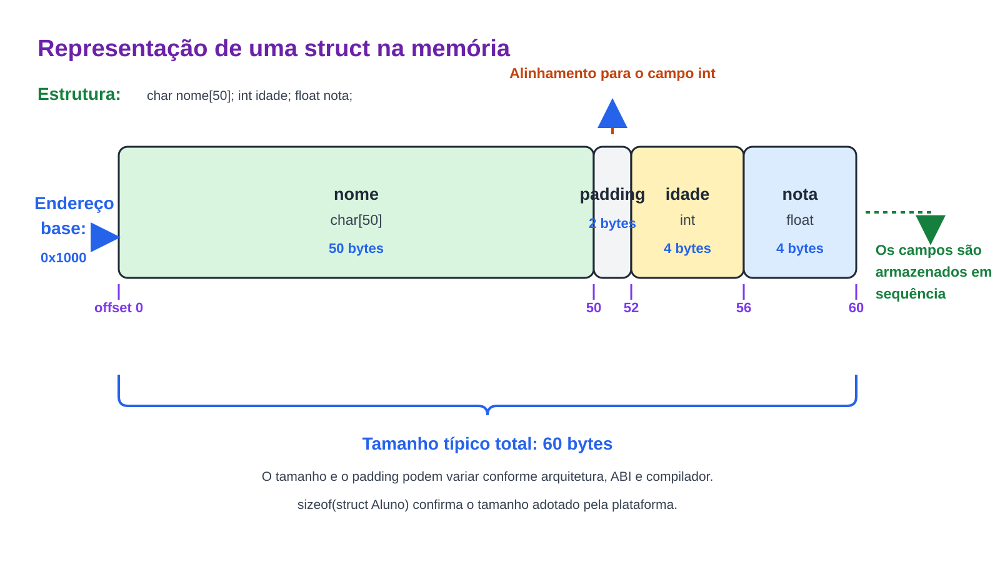
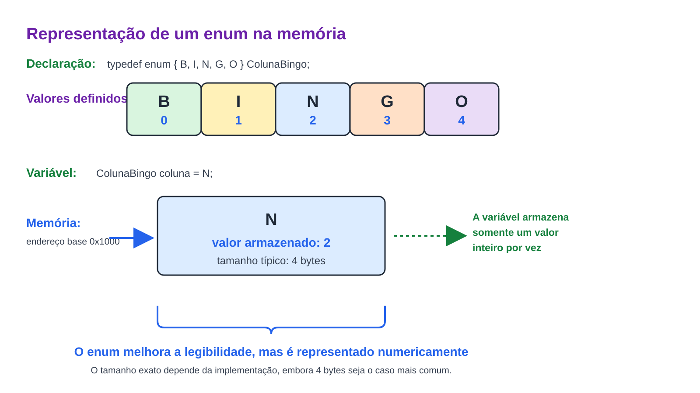

Prof. Me. Gustavo Ferreira Palma
Estruturas - Conceito
- Uma estrutura (struct) é um tipo de dado definido pelo programador que permite agrupar informações de
diferentes tipos em uma única variável.
- Enquanto vetores e matrizes armazenam apenas elementos do mesmo tipo, uma estrutura pode conter números
inteiros, números reais, caracteres, vetores e até mesmo outras estruturas.
- As estruturas são utilizadas para representar entidades do mundo real, como alunos, funcionários,
produtos,
contas bancárias e veículos.
Estruturas - Declaração
- Uma estrutura é declarada utilizando a palavra-chave 'struct'.
//...
struct NomeDaEstrutura {
tipo campo1;
tipo campo2;
//...
};
- Também é comum utilizar a palavra reservada 'typedef' para facilitar sua utilização.
typedef struct {
char nome[50];
int idade;
float nota;
} Aluno;
Estruturas - Declaração
- A principal diferença da declaração da estrutura sem o 'typedef' é que quando fomos utiliza-la no código é
necessário digitar novamente a palavra reservada 'struct'
int main() {
struct NomeDaEstrutura nomeDaVariavel;
}
- E quado utilizamos a palavra reservada 'typedef', podemos omitir a 'Struct na declaração das variáveis'.
int main() {
Aluno aluno;
}
Estruturas - Declaração

Estrutura - Inicialização
- Uma estrutura pode ser inicializada no momento de sua declaração.
Aluno aluno = {
"Maria",
20,
9.5
};
- Também é possível atribuir valores individualmente.
Aluno aluno;
strncpy(aluno.nome, "Maria", sizeof(aluno.nome));
aluno.idade = 20;
scanf("%.2f", aluno.nota);
Estruturas - Acesso Aos Elementos
- Os campos de uma estrutura são acessados utilizando o operador ponto (.).
printf("%s\n", aluno.nome);
printf("%d\n", aluno.idade);
printf("%.1f\n", aluno.nota);
//Também é possível alterar seus valores.
aluno.nota = 10.0f;
Estruturas - Vetores de Estruturas
- Assim como qualquer outro tipo, estruturas podem ser armazenadas em vetores.
//...
Aluno turma[40];
//...
- Cada posição do vetor representa um aluno diferente.
//...
turma[0].idade = 18;
//...
- Esse recurso é amplamente utilizado em sistemas de cadastro.
Enumeradores - Conceito
- Um enumerador (enum) define um conjunto de constantes inteiras nomeadas.
- Seu principal objetivo é tornar o código mais legível, eliminando valores numéricos sem significado
(Magic Numbers) e restringindo um conjunto de valores possíveis para uma variável.
Enumeradores - Conceito

Enumeradores - Declaração
- Uma enumeração é declarada utilizando a palavra-chave 'enum'.
//...
enum NomeDaEnum
{
VALOR1,
VALOR2,
VALOR3
};
//...
- Também é comum utilizar typedef.
typedef enum {
DESLIGADO,
LIGADO
} Estado;
Enumeradores - Inicialização
- Uma variável do tipo enum pode ser inicializada utilizando qualquer um dos valores definidos.
- Caso nenhum valor seja informado, o primeiro elemento recebe o valor 0, e os seguintes são incrementados
automaticamente.
//...
DESLIGADO = 0
LIGADO = 1
//...
- Também é possível atribuir valores explicitamente.
typedef enum {
B = 1,
I = 16,
N = 31,
G = 46,
O = 61
} ColunaBingo;
Enumeradores - Aplicação
- Os valores da enumeração podem ser utilizados normalmente em expressões condicionais.
Estado led = LIGADO;
if (led == LIGADO)
{
printf("LED ligado.\n");
}
//Ou em estruturas de decisão.
switch(coluna)
{
case B:
printf("Coluna B");
break;
case I:
printf("Coluna I");
break;
}
Enumeradores - Vantagens
- Elimina Magic Numbers.
- Aumenta a legibilidade do código.
- Facilita a manutenção.
- Reduz erros de programação.
- Representa conjuntos finitos de valores.
- As enumerações são frequentemente utilizadas para representar estados, dias da semana, meses, tipos de
mensagens, protocolos de comunicação, menus e constantes simbólicas.
OBRIGADO!
Podem me encontrar aqui:
- gustavo.palma@unisal.edu.br
- www.gustavopalma.com.br